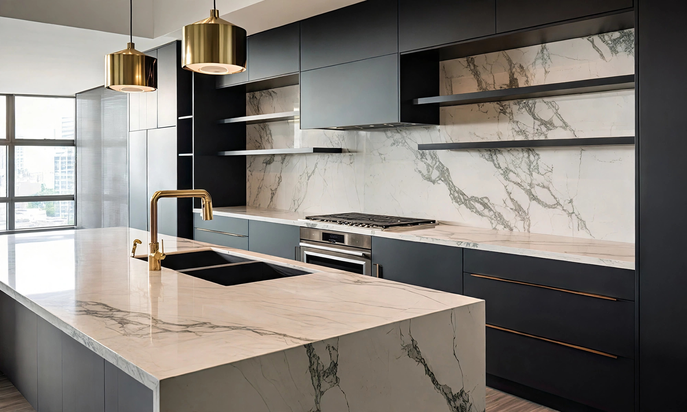

Renovation & Construction
Renovation Services
MYEC Inc. provides renovations and improvement work for homeowners, property managers and commercial clients across Ottawa, with clear scope and careful finishing.
- Kitchens, bathrooms and basements
- Flooring & tile, drywall & painting, decking & fencing
- Written scope and quote before work begins